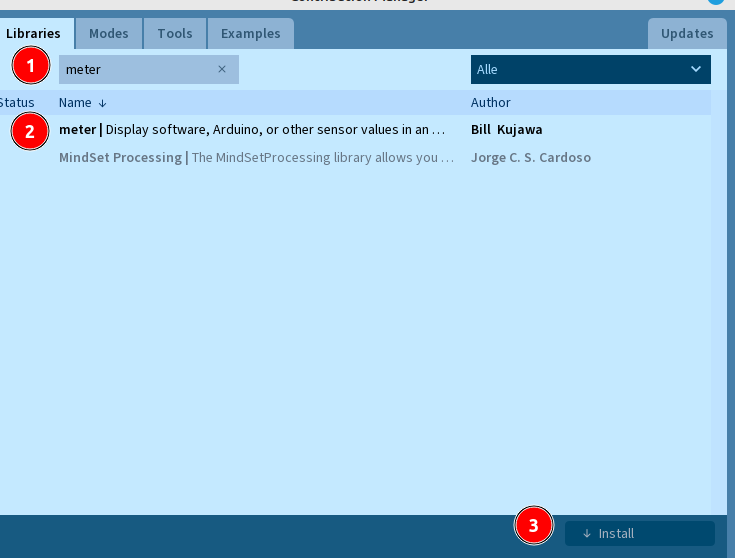
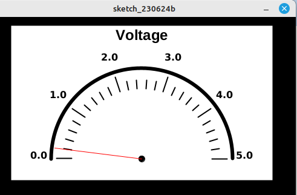

Der Serielle Monitor und der Serielle Plotter sind einfache Werkzeuge, um Daten des Arduinos am Computer darzustellen.
Mit Hilfe der Programmiersprache Processing können die Daten sehr viel schöner angezeigt werden.
// Läuft einmal ab
void setup(){
}
// Läuft wiederholt ab
void draw(){
}
Der Sketch ähnelt dem eines typischen Arduino-Programms. Die loop-Methode heißt in Processing allerdings draw-Methode. Sie verhält sich aber genauso.
Zur grafischen Darstellung der Messwerte verwenden wir die Meter-Bibliothek von Processing.
Öffne das Menü Sketch.Library importieren.Manage Libraries

Schreibe oberhalb der setup-Methode folgende Zeile, um die Bibliothek mit allen Unterklassen in den Sketch zu laden:
import meter.*;
Mit folgender Zeile erstellst du ein Objekt der Klasse Meter:
Meter m;
Ergänze deinen Sketch um folgende Zeilen:
import meter.*;
Meter m;
// Läuft einmal ab
void setup() {
size(500, 400);
background(0, 0, 0);
m=new Meter(this, 25, 10);
}
int wert=0;
// Läuft wiederholt ab
void draw() {
wert=wert+1;
if (wert>255) {
wert=0;
}
m.updateMeter(wert);
delay(10);
}
Öffnet ein Programmfenster, dass 500 Pixel breit und 400 Pixel hoch ist.
Stellt die Hintergrundfarbe des Fensters auf schwarz ein.
Erzeugt ein neues Anzeigeobjekt,
Es wird der aktuelle Wert der Variable wert auf der Anzeige dargestellt.
Die Werte laufen hierbei von 0 bis 255.
Es wird eine Pause von 10ms eingelegt.
Wenn du das Programm startest, sollte folgende Anzeige erscheinen und der Wert sollte von 0,0 bis 5,0 Volt steigen:

Wir wollen Temperaturen in einem Bereich zwischen -30 und +110 °C messen. Füge am Ende der setup-Methode folgende Zeilen ein, um die Beschriftung der Anzeige zu ändern:
m.setTitle("Temperatur in °C");
String[] labels={"-30","-20","-10","0","10","20","30","40","50","60","70","80","90","100","110"};
m.setScaleLabels(labels);
Die Anzeige bekommt einen neuen Titel (setTitle) und neue Skalenbeschriftungen (setScaleLabels):